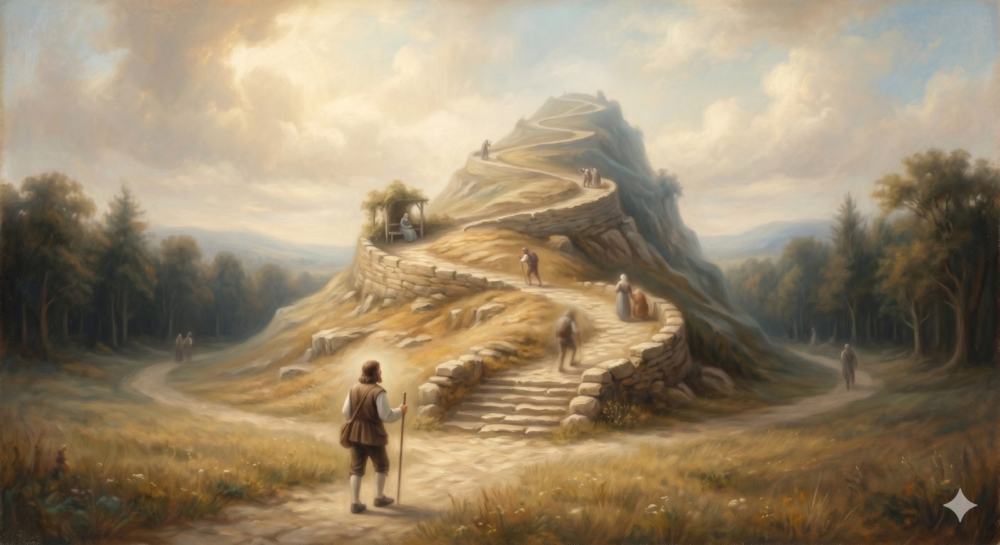

The Hill Difficulty
The steep road after the Cross — where growth is real, assurance can be dropped, and fear turns out to be chained.
"And I am sure of this, that he who began a good work in you will bring it to completion at the day of Jesus Christ." Philippians 1:6 (ESV)
Past the Cross, the road does not coast. It tilts upward. Bunyan puts a steep hill directly in the pilgrim's path — Difficulty — with two easier roads peeling off around its base, one called Danger and one called Destruction. Christian looks at the climb, and he climbs. Partway up there is an arbour, a pleasant resting place, and he sits down to catch his breath and reads his scroll for comfort. And then he does what tired pilgrims do. He falls asleep, and the scroll slips from his hand.
That small scene holds almost everything this stretch of road has to teach: that the Christian life after conversion is a climb, not a victory lap; that growth is real but uneven; and that assurance, once given, can be set down and lost — and must be gone back for. Let us take those in turn, because the hill is where a great deal of honest discouragement lives.
Part OneFruit, not a scorecard
The first thing to settle on the climb is what growth actually is, because almost everyone gets the logic backwards and exhausts themselves on it. Paul calls the marks of a maturing Christian the fruit of the Spirit — love, joy, peace, patience, and the rest. The word is doing careful work. Fruit is not manufactured; it grows, on its own, as the natural expression of a living connection to the vine. You do not screw apples onto a tree. You tend the tree, and apples are what a healthy tree does.
So here is the distinction that keeps the hill from crushing you: growth is the natural expression of genuine faith — not the measure by which you verify whether your faith is real. The moment you make fruit the measure, every bad week becomes evidence for the prosecution, and you are back at the town of Morality, taking your own spiritual temperature with trembling hands. Fruit reassures, but it was never meant to be the ground you stand on. The ground is the Cross, and the scroll sealed there.
📖 The Scripture behind this Direct / Entailedwhat’s this?›
The claim: Spiritual growth is the natural expression of genuine faith — fruit that grows from union with Christ — not the measure by which one verifies that faith is real.
- Galatians 5:22–23 (ESV) — “But the fruit of the Spirit is love, joy, peace, patience …”Maturity is called fruit — something grown, not manufactured.
- John 15:4–5 (ESV) — “As the branch cannot bear fruit by itself … apart from me you can do nothing.”Fruit comes only from remaining in the vine — it is the overflow of union, not self-effort.
- Ephesians 2:10 (ESV) — “For we are his workmanship, created in Christ Jesus for good works, which God prepared beforehand.”Good works are the result of being his workmanship, downstream of grace.
The case for Entailed. The further, crucial claim — that fruit is therefore not the ground of assurance, not the measure by which you verify your faith — is drawn by holding the fruit texts together with what Scripture says assurance rests on (the finished work of Christ and the Spirit’s seal, Ephesians 1:13–14). That fruit reassures but is not the foundation is good and necessary consequence, not a single verse. So ‘growth is real’ is direct; ‘growth is not the thing you stand on’ is entailed.
Where they meet. Scripture states that growth is grown fruit; comparing Scripture with Scripture shows it was never meant to be the ground underfoot. The ground is the Cross; the fruit is what grows once you are standing there.
The fruit-as-expression reading is direct; that fruit is not the measure of assurance is good and necessary consequence — a guard the Reformed tradition stresses, grounded here in the texts.
And the signposts of real growth are often not the ones we expect. Frequently they run the other way: the maturing Christian usually becomes more aware of sin, not less — more grieved by pride, more conscious of how far the love still has to go. That can feel like backsliding. It is usually the opposite. Growing light does not create the dust in the room; it reveals what was always there, which is itself a kind of progress.
Part TwoThe obedience that climbs
If fruit is not the engine, what does the climbing? Here the road has to hold two things at once, because letting go of either one sends pilgrims off down Danger or Destruction.
On one side is the error we met at the town of Morality: obey in order to earn your standing, obey to prove you are really saved. The road has already rejected that — it is the old self-salvation in new clothes, and it never rests. But there is an opposite error, just as real, and softer in its disguise. It says: since obedience should be the natural overflow of grace, I will wait until it feels natural before I obey. If the pull isn't there, my heart must not be ready. That sounds humble. It is, in fact, an escape hatch that Scripture does not provide.
The full picture holds both together without strain: obedience is the natural direction of a grateful heart — and it is the plain command of the God who gave the grace. Paul does not say wait until it feels natural. He says reckon yourselves dead to sin and present your members to God — commands, addressed to real people whose obedience does not yet feel automatic. Both are true at once: the redeemed heart wants to obey, and is told to, and there is no contradiction between a gift and a summons. You climb by doing the next right thing before you feel like it, trusting that the feeling often follows the act rather than leading it.
📖 The Scripture behind this Directwhat’s this?›
The claim: Obedience is at once the natural overflow of a grateful heart and the plain command of God — both true together, with no contradiction between a gift and a summons.
- Romans 6:11–13 (ESV) — “So you also must consider yourselves dead to sin … present yourselves to God … and your members … as instruments for righteousness.”Paul issues commands to people whose obedience does not yet feel automatic.
- Philippians 2:12–13 (ESV) — “work out your own salvation … for it is God who works in you, both to will and to work.”Command (‘work out’) and gift (‘God works in you’) stated in the same breath.
- Titus 2:11–12 (ESV) — “The grace of God … training us to renounce ungodliness … and to live self-controlled … lives.”Grace itself trains us to obey — the gift produces the summons’s aim.
Both the indicative (gift) and imperative (command) are stated directly in Scripture; the antinomian guard the page raises is the texts' own balance.
In plain terms
Two traps on the hill. The first: "I have to obey to stay saved" — that's the old performance treadmill, and the Cross already took it down. The second: "I'll obey once I feel like it" — that's waiting for a feeling Scripture never tells you to wait for.
The way up is neither. You obey because you are already loved and because you are asked to — and you do the next right thing before the feeling arrives, not after.
Part ThreeThe scroll, lost and found
Then there is the sleeping pilgrim and the dropped scroll — the truest picture of assurance on the whole road. Christian wakes, hurries on, and only later, reaching for his comfort, discovers his hand is empty. He has to go back down the hill in distress, retracing his steps, until he finds the scroll where he let it fall, and takes it up again with relief, and goes on.
Notice what is and is not lost. He never stopped being a pilgrim. The road was still his; the Cross still behind him; his standing never in question. What he lost was the comfort of assurance — the felt certainty — not the fact of belonging. This is the distinction the whole climb depends on. Assurance is not a mood you must sustain by effort; it rests on what Christ did and the Spirit sealed, not on the steadiness of your grip. Feelings rise and fall, and there are darker valleys ahead where they will fail outright. When the comfort goes missing, the answer is not to manufacture a better feeling. It is to go back to the same place the scroll was given — the Cross — and take up again what was always true.
The pilgrim did not lose the road when he lost the scroll. He lost his comfort — and went back for it.
And the lions. Near the top of the hill Christian sees two lions in the path and nearly turns back in terror — until he is told they are chained, and that the path runs straight between them, close enough to feel their breath but out of their reach. Much of what frightens us on the climb is exactly this: real, loud, and chained. The fear is not nothing. But it is smaller than it looked from a distance, and the way runs right through the middle of it. Just past the lions stands a house built for the relief of pilgrims — and that is the next stop on the road.